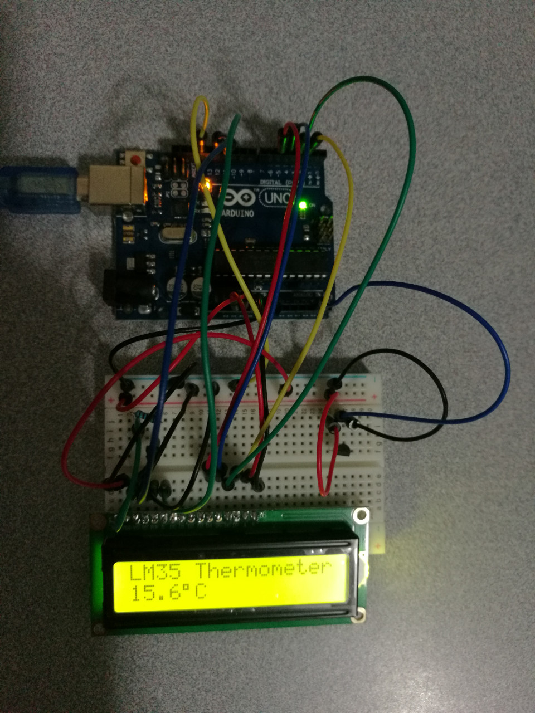

Liquid Crystal Thermometer LM35
Hardware Wiring

Sketch
#include <LiquidCrystal.h> //call arduino's library LiquidCrystal
LiquidCrystal lcd(12, 11, 5, 4, 3, 2);//set LCD IO pins
int potPin = 4; //设置模拟口4为LM35的信号输入端口
float temperature = 0; //设置temperature为浮点变量
long val=0; //设置val为长整数变量
void setup()
{
lcd.begin(16, 2); //initialize LCD
lcd.print("LM35 Thermometer"); //使屏幕显示文字LM35 Thermometer
delay(1000); //delay 1000ms
}
void loop ()
{
val = analogRead(potPin); //val变量为从LM35信号口读取到的数值
temperature = (val*0.0048828125*1000); //把读取到的val转换为温度数值的10倍
lcd.clear(); // Clear LCD
lcd.print("LM35 Thermometer"); //使屏幕显示文字LM35 Thermometer
lcd.setCursor(0, 1) ; //设置光标位置为第二行第一个位置
lcd.print((long)temperature / 10); //显示温度整数位
lcd.print("."); //display point "."
lcd.print( (long)temperature % 10); //显示温度小数点后一位
lcd.print((char)223); //显示o符号
lcd.print("C"); //display character "C"
delay(2000); //delay 2 seconds, this defines the fresh frequency.
}